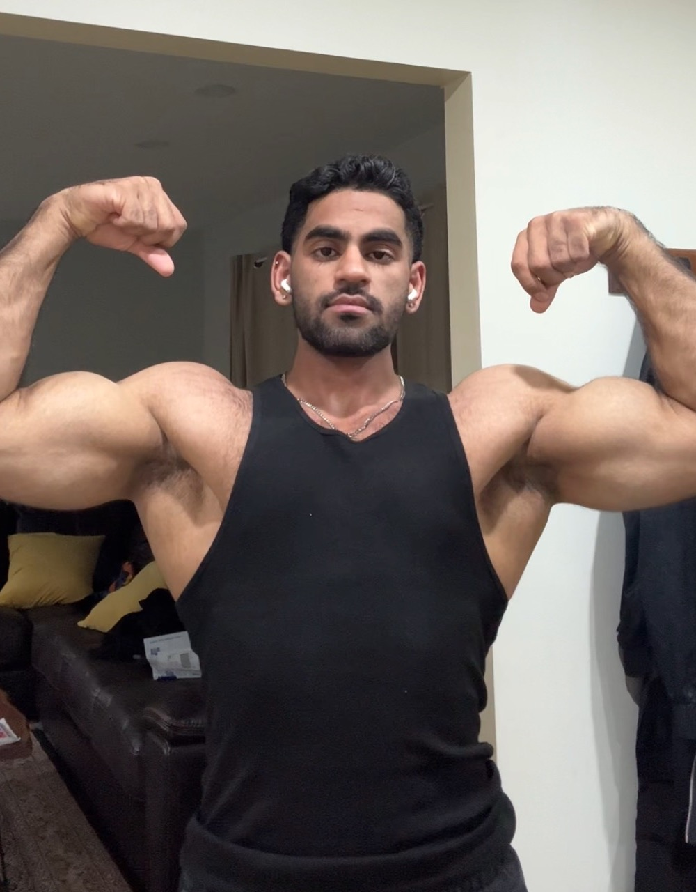

Certified personal training foundation.
About Abdullah
Why I Coach
Most people do not fail because they lack motivation. They fail because they lack structure.

Coaching foundation
No extremes. No shortcuts. No guesswork.
Sustainable progress comes from consistent execution of proven principles.
Training, nutrition, recovery, and accountability all matter. My coaching focuses on building systems that work in real life, not temporary fixes that people abandon after a few weeks.
Why I Coach
Most people don't fail because they lack motivation.
They fail because they lack structure.
Over the years I've spent countless hours studying training, nutrition, recovery, exercise execution, and physique development while building my own physique and helping others improve theirs.
What I learned is simple: the internet gives people more information than ever before. What it rarely gives them is a system they can actually follow.
My coaching combines practical training, sustainable nutrition, accountability, and weekly feedback to create a process that produces measurable progress.


My coaching philosophy
The best plan is the one you can execute repeatedly.
Most people already know what they should do.
The challenge is staying consistent long enough to see results.
My coaching focuses on creating practical systems that fit real life so progress becomes repeatable instead of temporary.
Built Through Experience
Years of hands-on training shaped the system I teach today.
Physique development, nutritional experimentation, exercise execution, and practical coaching experience all shape how I build plans. Everything I recommend is built around sustainability, consistency, and real-world execution.
Individual guidance, not a template.
Feedback and adjustments every week.
Why clients choose Abdullah
Everything is designed to make progress easier to repeat.
Clear structure, honest feedback, and weekly standards that fit real life.
Practical Programming
Training built around real schedules, recovery, and long-term progress.
Nutrition That Makes Sense
No crash diets. Clear calorie and protein targets designed to be sustainable.
Weekly Accountability
Regular check-ins, feedback, and adjustments to keep progress moving.
Results Through Consistency
The goal is not perfection. The goal is repeatable habits that create lasting results.
Client journey
From application to weekly refinement.
Apply
Tell me your goal and current routine.
Assessment
We review your starting point and constraints.
Program Build
Get a structure built for your schedule.
Weekly Check-ins
Train, track, and communicate weekly.
Results
Refine based on progress and feedback.
Apply for coaching